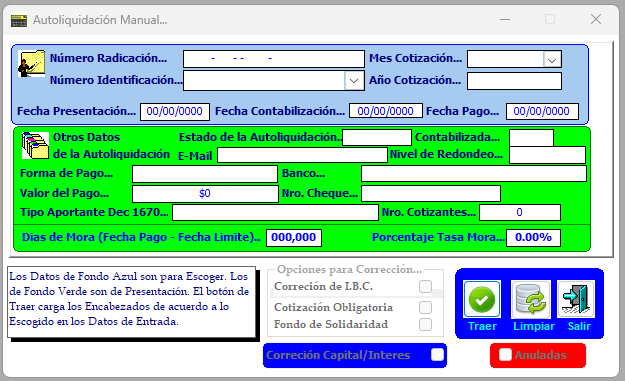
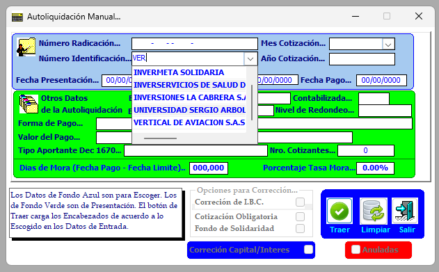
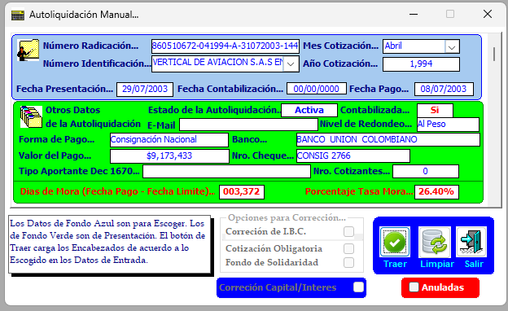
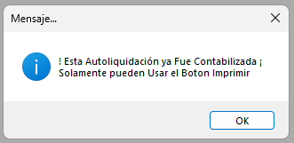
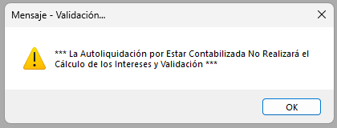
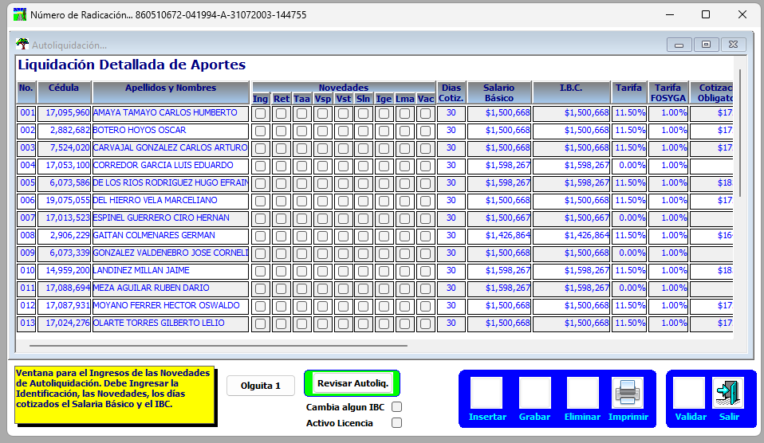

Esta ventana sirve para traer las autoliquidaciones que ya han sido contabilizadas.
Como ejemplo tomaremos la empresa Vertical de Aviación y periodo Noviembre de 2015.

Para traer la autoliquidación se debe dar clic en traer, y automáticamente trae el resto de la información.

Al dar doble clic sobre cualquier lugar de la autoliquidación, el sistema envía la siguiente validación.

Al dar clic en aceptar, envía la siguiente validación.

Al dar clic en aceptar envía la siguiente validación, correspondiente a la liquidación detallada de los aportes.
